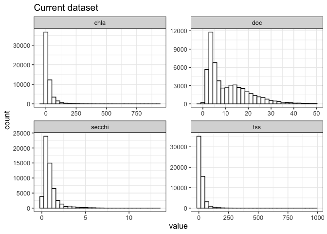
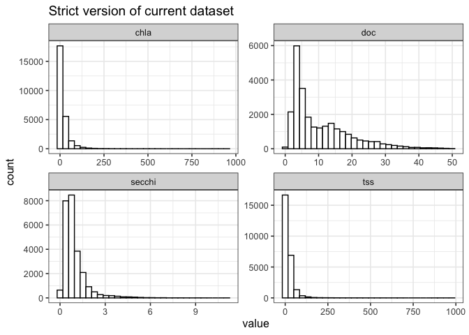

8 Light partitioning modeling report
8.0.0.1 Dataset options for simultaneous records:
Code
# MR's original
simul <- params$simul
# Our attempt at recreating MR's data
simultaneous_data <- params$simultaneous_data
# A stricter version
simultaneous_data_strict <- params$simultaneous_data_strict8.0.1 Overview of simultaneous records
8.0.1.1 Differences in number of rows:
The original simultaneous Light Partitioning dataset based on AquaSat downloads and MR’s scripts has 100,853 records. Our attempt at achieving a similar number of rows using the current version of the WQP harmonization workflow contains 55,675 records. A stricter version of our dataset contains 25,588 records.
Most decisions regarding harmonization choices and filtering for the two
more current datasets can be found in
3_harmonize/src/clean_wqp_data.R,
3_harmonize/src/harmonize_[param].R, and similarly named functions
with _strict appended for the version used on the stricter dataset.
The stricter of our two datasets contains a few more filters than the other datasets:
- While cleaning the raw WQP data for later use, missing rows are removed. This likely has little to no effect on the dataset given that downstream steps should remove most or all of these
- DOC: Michael Meyer’s “inclusive” tier of analytical methods is dropped from this version. This and other tiering match tables will be included as csv files
- SDD: Matt Brousil’s “unlikely” grouping for sampling methods is dropped from this version. The same grouping is dropped from collection equipment as well
- TSS: Katie Willi’s “ambiguous” tiers for analytical methods are dropped from this version
8.0.1.2 Differences between the the two larger datasets:
MR’s dataset (simul) and our attempt at recreating it
(simultaneous_data) do not match in size.
While investigating the reason behind this, MRB found ~1.4 million
site-date-parameter combinations in MR’s wqp_lagos_unity.csv download,
after removing LAGOS, that we don’t have in our raw WQP download using
the current workflow method. Of those 1.4 million combos we don’t have
the parameter breakdown is: chla 34k, doc 33k sdd 92k, tss 1.2 million.
Within the 1.4 million missing combinations, 7.7k - 15.1k are sites we
don’t have at all in our WQP download. This range is due to some
uncertainty from us intentionally dropping one of the tss
CharacteristicNames. We’re unfortunately limited in how much we can
dig into the dataset differences further. It would take more time to
understand how the original AquaSat’s WQP querying process differs from
the USGS method we’ve based our pipeline on. The original dataset
downloaded for MR’s version has also been processed to the point where
many columns that would help with comparing versions have been dropped.
KW did a quick download of the four parameters from WQP using her own method and found that her number of records still differed from MR’s.
tldr: We tried to create a perfect, updated match to MR’s simul
dataset but hit a wall.
8.0.2 Comparisons against MR’s AquaSat 1 version:
8.0.2.1 Parameter distributions
MR’s original dataset:

Our dataset:

Our strict dataset:

Comparison table:| parameter | dataset | mean_val | sd_val |
|---|---|---|---|
| chla | Current dataset | 22.38 | 38.95 |
| chla | MR simul | 19.74 | 33.55 |
| chla | Strict dataset | 18.95 | 32.43 |
| doc | Current dataset | 11.02 | 9.04 |
| doc | MR simul | 8.59 | 7.85 |
| doc | Strict dataset | 10.54 | 8.89 |
| secchi | Current dataset | 0.92 | 0.86 |
| secchi | MR simul | 0.95 | 0.78 |
| secchi | Strict dataset | 0.94 | 0.80 |
| tss | Current dataset | 20.80 | 32.08 |
| tss | MR simul | 21.02 | 30.29 |
| tss | Strict dataset | 19.62 | 31.68 |
8.0.3 Modeling
We’ll run the linear model with all three versions of the dataset. The code below is adapted from MR’s scripts.
Code
range_val <- 234
# Multiply chla by 234
nap_test <- map(.x = list(simul = rename(simul, chla = chl_a),
simultaneous_data = simultaneous_data,
simultaneous_data_strict = simultaneous_data_strict),
.f = ~ expand_grid(.x, chl_ratio = range_val) %>%
mutate(power = ifelse(chl_ratio == 234, 0.57, 1),
chla_biomass = exp(log(chl_ratio / 1000) + log(chla) * power),
tss_dead = tss - chla_biomass))## Warning in log(chla): NaNs produced
## Warning in log(chla): NaNs producedCode
map(.x = nap_test,
.f = ~ .x %>%
#Remove negatives and very small numbers (ug/L of sediment is basically zero)
filter(tss_dead > 0.001) %>%
# sample_frac(0.1) %>%
ggplot(., aes(chla,tss_dead,color = type)) +
facet_wrap(~chl_ratio) +
geom_point() +
scale_x_log10() +
scale_y_log10() +
stat_poly_eq() +
ggthemes::theme_few() +
scale_color_manual(values = c('seagreen3','skyblue3','saddlebrown')))## $simul
##
## $simultaneous_data
## Warning: [1m[22mTransformation introduced infinite values in continuous x-axis
## [1m[22mTransformation introduced infinite values in continuous x-axis
## Warning: [1m[22mRemoved 132 rows containing non-finite values
## (`stat_poly_eq()`).
##
## $simultaneous_data_strict
## Warning: [1m[22mTransformation introduced infinite values in continuous x-axis
## Warning: [1m[22mTransformation introduced infinite values in continuous x-axis
## Warning: [1m[22mRemoved 18 rows containing non-finite values (`stat_poly_eq()`).
Code
nap_est <- map(.x = nap_test,
.f = ~ .x %>%
filter(tss_dead > 0.001) %>%
mutate(secchi = ifelse(secchi < 0.01, 0.01, secchi),
kd = (1 / secchi)))Code
model <- map(.x = nap_est,
.f = ~ lm(kd ~ tss_dead + doc + chla, data = .x))
nap_resid <- map2(.x = nap_est,
.y = model,
.f = ~ .x %>%
mutate(residuals = .y$residuals,
pred = .y$fitted.values))
model_metrics <- pmap_df(.l = list(nap_resid = nap_resid,
name = names(nap_resid),
model = model),
.f = function(nap_resid, name, model){
dataset <- name
rmse <- round(rmse(nap_resid$kd, nap_resid$pred), 2)
adj_rsq <- round(unlist(summary(model)["adj.r.squared"][1]), 2)
tibble(dataset = dataset,
rmse = rmse,
adj_rsq = adj_rsq)
})
model_metrics %>%
left_join(x = .,
y = tibble(
dataset = c("simul", "simultaneous_data", "simultaneous_data_strict"),
rows = c(nrow(simul), nrow(simultaneous_data), nrow(simultaneous_data_strict))),
by = c("dataset")) %>%
kable() %>%
kable_paper()| dataset | rmse | adj_rsq | rows |
|---|---|---|---|
| simul | 1.96 | 0.16 | 100853 |
| simultaneous_data | 1.85 | 0.23 | 55675 |
| simultaneous_data_strict | 1.32 | 0.36 | 25588 |